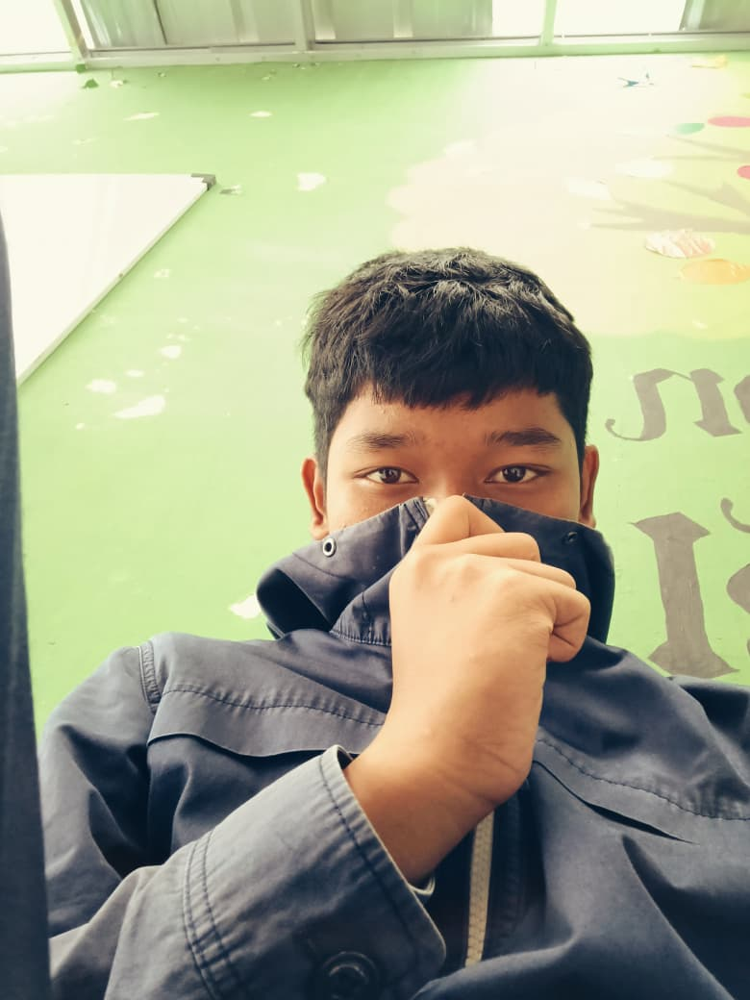
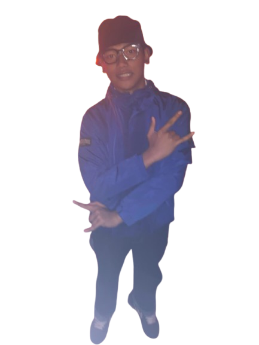
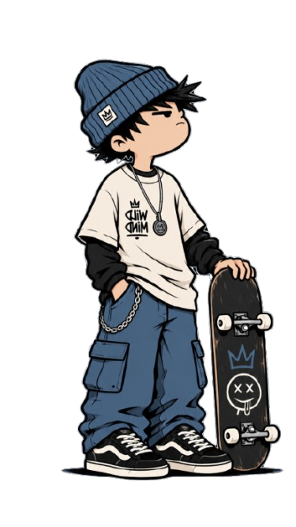
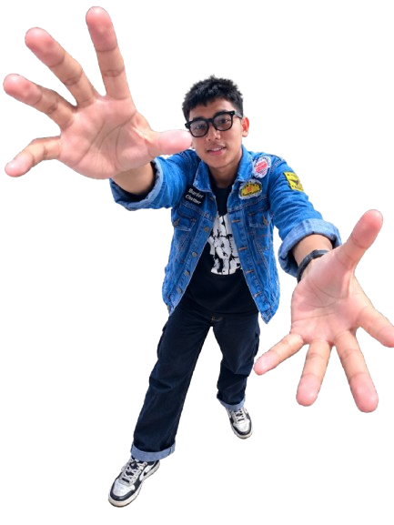
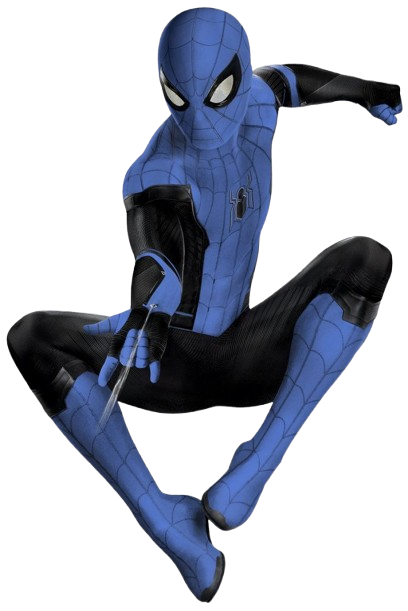

My Project
Berikut adalah beberapa hasil karya dan latihan yang sedang saya kembangkan.

Yagsya k.sWELCOME TO MY PERSONAL WEBSITE
Saya adalah pelajar SMK Wikrama Bogor yang sedang belajar coding, desain, dan web development.
Kenali Saya →

Hi, saya Yagsya
Ini adalah portfolio saya
About Me
HALO, SENANG BERTEMU DENGAN ANDA!
Nama saya Muhammad Yagsya Khoirul Sapaat, siswa jurusan Rekayasa Perangkat Lunak di SMK Wikrama Bogor — sekolah berbasis teknologi yang mendorong saya untuk terus berkembang di bidang pengembangan web dan pemrograman.
Hobi saya menikmati trekking ke pegunungan dan mengeksplorasi alam terbuka. Bagi saya, alam adalah tempat terbaik untuk menjernihkan pikiran dan mendapat perspektif baru.
Saya berasal dari Bogor — kota yang dikenal dengan hujannya, dan satu kawasan unik yang kerap disebut Kampung Brazil karena memang mirip kalo di liat dari satu sisi.
Ke depan, saya ingin membangun karier di dunia teknologi, berkeliling dunia, dan mewujudkan kebanggaan keluarga melalui kerja keras dan karya nyata.
Learn More →
Berikut adalah beberapa hasil karya dan latihan yang sedang saya kembangkan.
LET'S TALK ABOUT SOMETHING GREAT
Hubungi saya melalui media sosial di bawah ini. Mari berteman dan berbagi pengalaman!